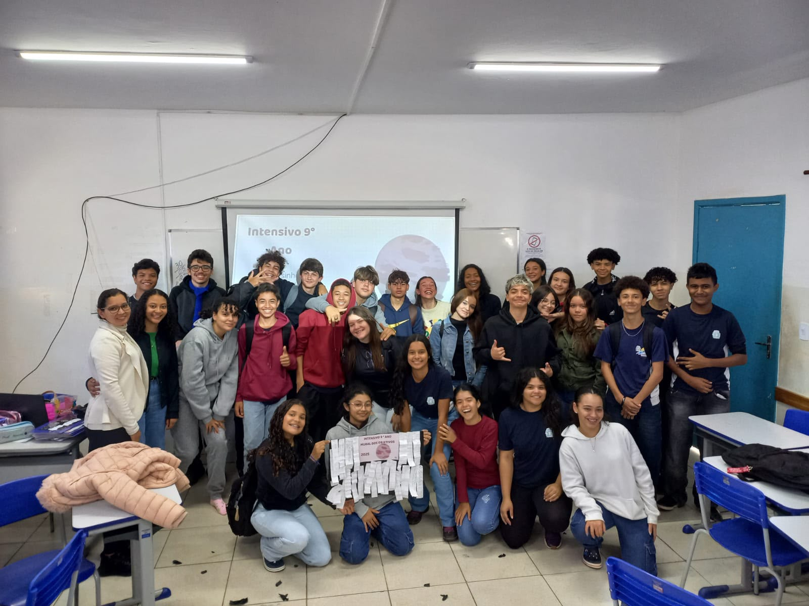
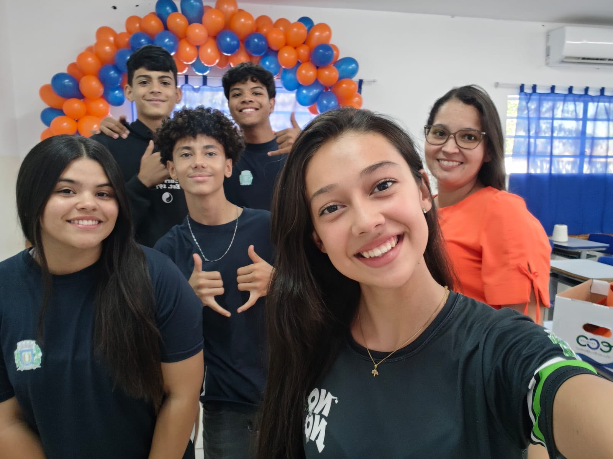
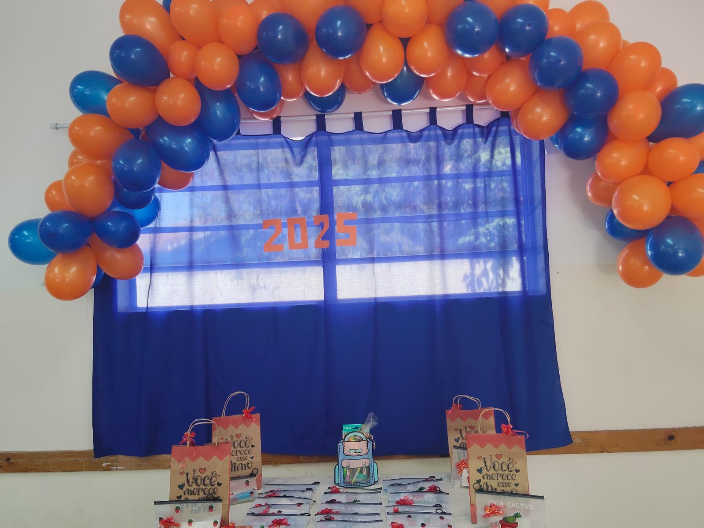
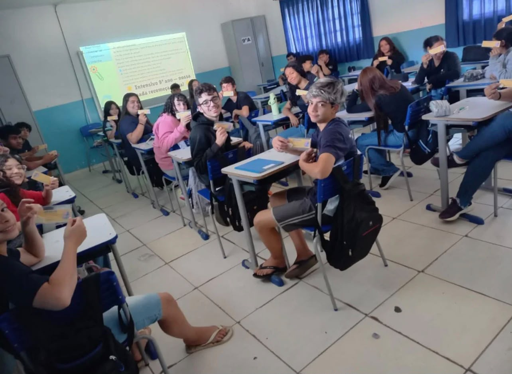
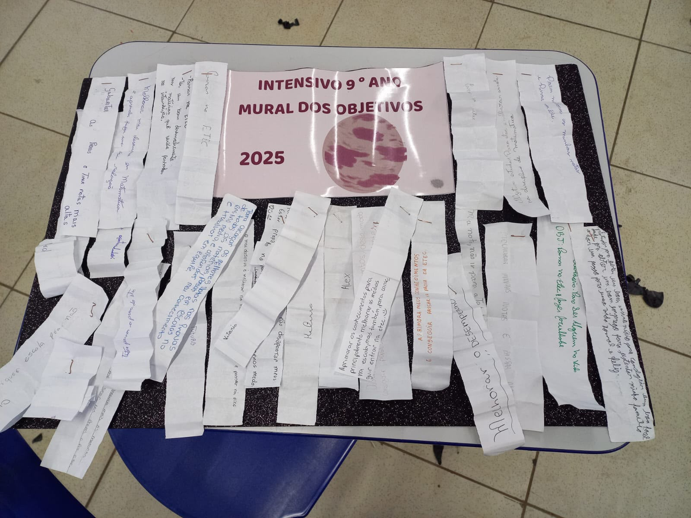
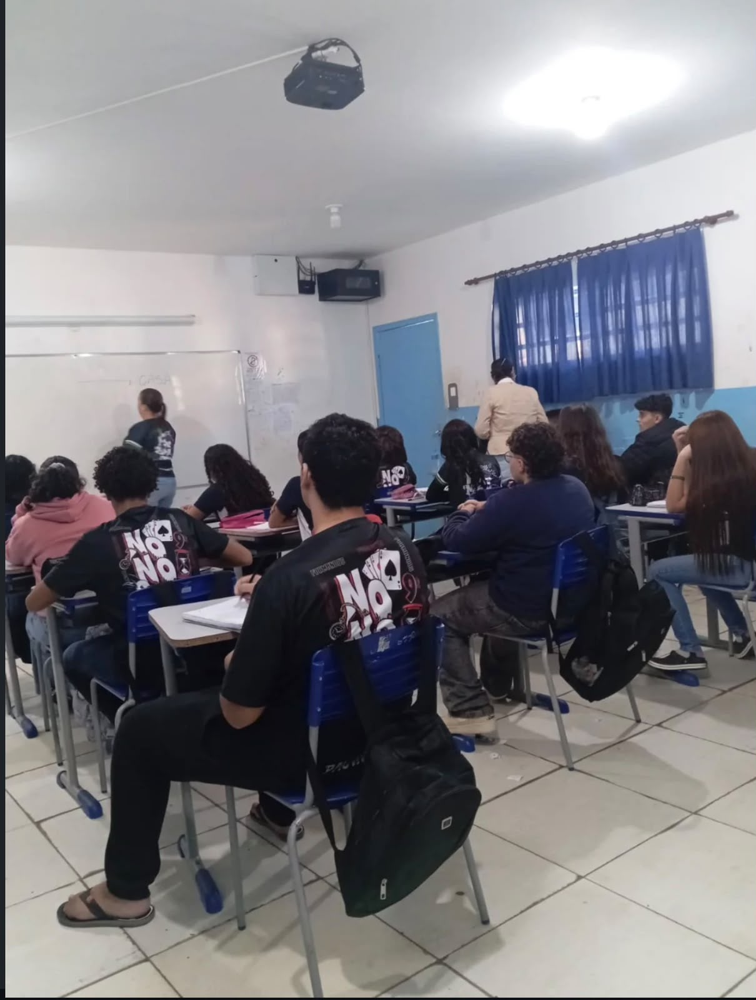
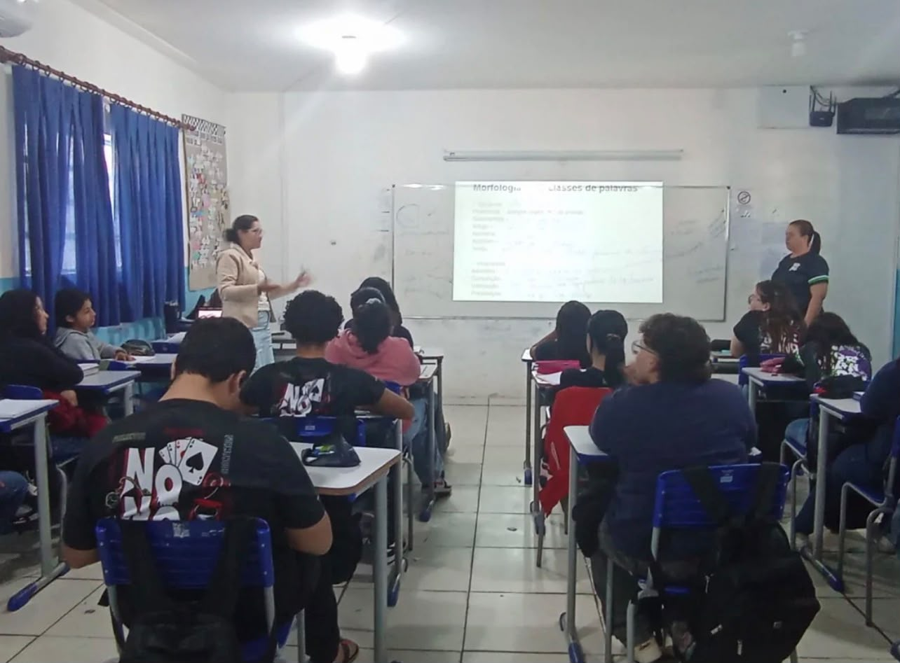
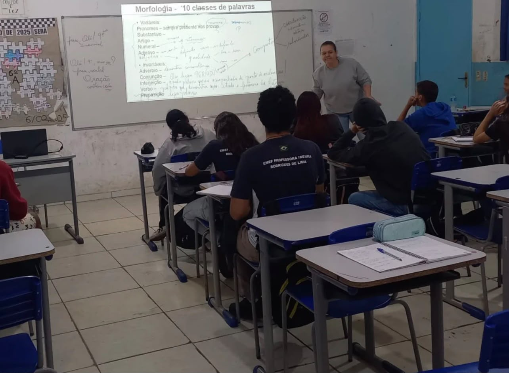
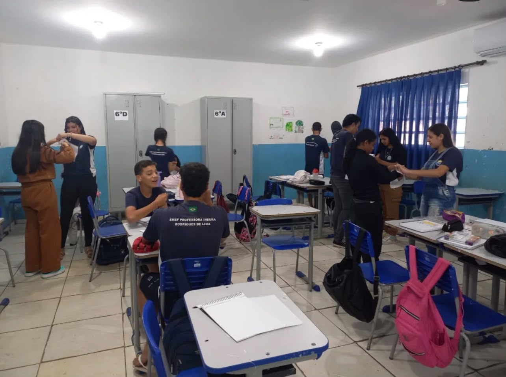

Preparação
Aulas e atividades voltadas à preparação dos alunos para vestibulinhos e processos seletivos.
EMEF INEURA RODRIGUES DE LIMA
Uma jornada de conhecimento, preparação e novas oportunidades.
Professora Noemi
A experiência começa após clicar em COMEÇAR.UMA JORNADA DE PREPARAÇÃO
Conheça o Intensivo, explore suas possibilidades e teste seus conhecimentos.
9º ano
CONHEÇA O PROJETO
Aulas e atividades voltadas à preparação dos alunos para vestibulinhos e processos seletivos.
Conteúdos de diferentes áreas são revisados para fortalecer a base necessária para os próximos desafios.
Transformar dedicação em oportunidades e ajudar cada aluno a encontrar seu próximo caminho.
O Intensivo começa como uma iniciativa de preparação para os alunos do 9º ano.
O projeto continua incentivando novas turmas a buscarem seus objetivos.
Cada nova turma pode escrever uma nova parte dessa história.
SEU PRIMEIRO PASSO
O Intensivo é voltado aos alunos do 9º ano que querem se preparar para vestibulinhos, avaliações e outros processos seletivos.
Alunos das turmas de 9º ano da EMEF Ineura Rodrigues de Lima, em Narandiba — SP.
Às sextas-feiras, com duas aulas de 50 minutos para cada turma:
Alunos do período da manhã: das 12h30 às 14h10.
Alunos do período da tarde: das 10h30 às 12h10.
Na EMEF Ineura Rodrigues de Lima, com a Profª Noemi da Silva Campos Cavalcante.
Procure a Professora Noemi ou a equipe da escola para confirmar a participação, as vagas e as orientações da sua turma.
Organização das aulas de 2026. Confirme eventuais mudanças de horário com a escola.
O QUE JÁ FOI CONSTRUÍDO
Mais de 30 alunos participaram do Intensivo e mais de 20 aprovações foram conquistadas em vestibulinhos e processos seletivos. Cada conquista faz parte dessa história.
MEMÓRIAS DE 2025
Todas as fotografias deste site são da turma do Intensivo de 2025, a edição do ano passado. São registros de quem já passou por essa jornada.









Clique em uma foto para ampliar.
No ano que vem, pode ser você nesse mural!
Sua turma também pode escrever uma nova parte dessa história.
ENTENDA O DESAFIO
DA PREPARAÇÃO AO PRÓXIMO PASSO
Consulte as inscrições, os cursos disponíveis, o calendário, as provas anteriores e os comunicados diretamente no portal oficial.
vestibulinho.etec.sp.gov.br · Abre em uma nova aba.
Participar do Intensivo e preencher seu perfil neste site não realiza sua inscrição no Vestibulinho. Siga as instruções do portal oficial.
POSSIBILIDADES
UM CONTEÚDO DE CADA VEZ
Escolha um conteúdo, retome suas anotações de aula e marque “Já revisei” quando concluir. Você pode desmarcar para revisar novamente.
Suas marcações e resultados ficam neste navegador. Use o mesmo dispositivo para acompanhar sua evolução.
DESAFIOS RÁPIDOS
Escolha uma área, responda às questões e fortaleça seus conhecimentos para os próximos desafios.
PREPARE-SE
Defina horários realistas e mantenha constância.
Resolver exercícios ajuda a reconhecer padrões e administrar o tempo.
Retome conteúdos em que você ainda sente dificuldade.
Descanso também faz parte de uma boa preparação.
PRÓXIMO DESAFIO
DESAFIO PRINCIPAL
Responda a dez questões de diferentes áreas do conhecimento. Depois de responder, confira a explicação e acompanhe seu desempenho.
CADA TENTATIVA CONTA
Conclua o Quiz do Intensivo para registrar seu resultado. Volte depois de estudar e compare suas tentativas.
Seu primeiro resultado começa com uma tentativa.
Histórico deste navegador, com até 50 tentativas. Limpar o histórico não apaga sua trilha de estudos.
ANTES DE COMEÇAR
O projeto atende às turmas de 9º ano da EMEF Ineura Rodrigues de Lima. Procure a Professora Noemi ou a equipe da escola para confirmar sua participação.
O Intensivo acontece às sextas-feiras, com duas aulas de 50 minutos por turma. Para os alunos do período da manhã, o horário é das 12h30 às 14h10; para os alunos do período da tarde, das 10h30 às 12h10. As atividades incluem explicações, questões, revisões, trabalho em grupo e simulados mensais.
Matemática, língua portuguesa, ciências da natureza, história, geografia e atualidades. A preparação inclui Vestibulinho Etec, SARESP, Instituto Federal e processos seletivos de bolsas em colégios privados.
Siga a orientação da professora sobre os materiais de cada encontro. Para estudar e registrar suas resoluções, tenha caderno e materiais de escrita à mão.
Não. Durante as aulas, siga as orientações da professora sobre o uso do celular. Você pode aproveitar a trilha e os quizzes deste site em seus momentos de estudo fora da aula.
Não. A participação no Intensivo, seu perfil e os quizzes são parte da preparação. A inscrição na Etec deve ser feita pelo portal oficial do Vestibulinho ↗, seguindo o calendário e as instruções disponíveis lá.
Todas as nove fotos do mural são do Intensivo de 2025. No ano que vem, sua turma também pode fazer parte dessa história!
Sim, quando o navegador permite o armazenamento local. Os dados ficam no dispositivo e navegador que você usa, sem envio para a escola. Limpar os dados do navegador pode apagar esse acompanhamento.
PARA CONTINUAR
“Grandes conquistas começam com pequenas decisões.”
UMA HOMENAGEM
“Por trás de cada aprovação, existe alguém que decidiu acreditar primeiro.”
Obrigado por transformar conhecimento em oportunidade, por incentivar sonhos e por mostrar que preparação, dedicação e persistência podem abrir novos caminhos.
EMEF Ineura Rodrigues de Lima